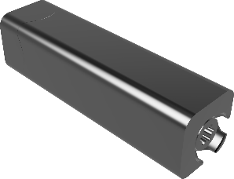
07.LFU.1KNUnidad de fuerza lineal
Fuerza máxima 1 kN · Rango de 25 mm · 2,5 mm por vuelta · Llave Torx 15.
Linear Force es el distractor articular de Biosurgex. Separa las superficies articulares de forma controlada, vuelta a vuelta, para que la cámara artroscópica tenga el campo visual que necesitas.
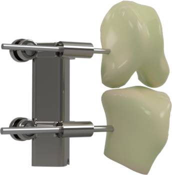
En artroscopia, unos milímetros de separación entre las superficies articulares cambian por completo lo que ve la cámara. Linear Force crea ese espacio de forma estable durante todo el procedimiento.
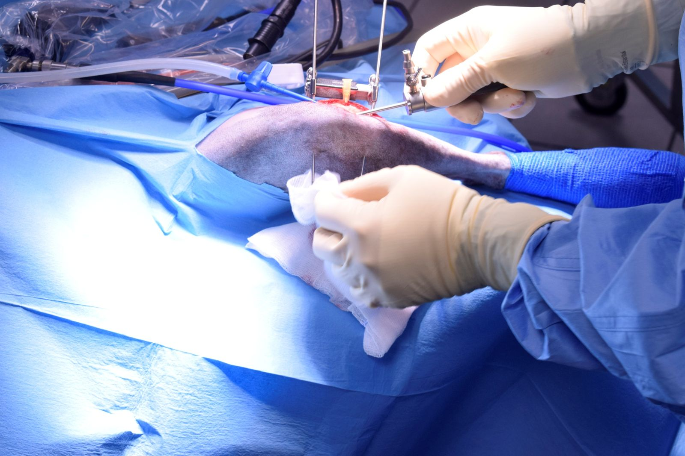
Cada vuelta completa abre 2,5 mm. Sabes en todo momento cuánto estás distrayendo.
Hasta 1 kN de fuerza de distracción en un cuerpo compacto que no estorba al instrumental.
25 mm de rango de distracción, ampliable en separación inicial con extensiones de 30 mm.
Pins de Ø 2,0, 2,5 y 3,0 mm, pensados para razas toy, medianas y grandes.
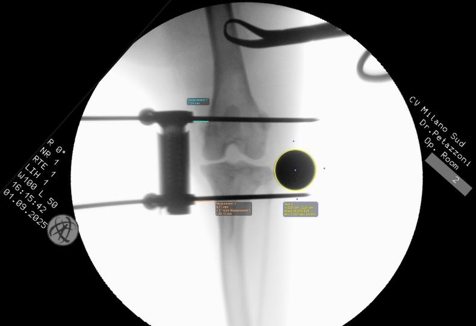
Los pins se fijan a distancia del hueso y el cuerpo del distractor queda fuera del campo de trabajo, dejando libres los portales artroscópicos.
El paso de 2,5 mm por vuelta hace que la distracción sea predecible. Mueve el control para ver cuánto abre la articulación.
Rango máximo: 25 mm (10 vueltas). Valores orientativos según la especificación del fabricante.
La unidad de fuerza lineal, pins para cada tamaño de paciente, extensión y tornillería. Todo se ajusta con una única llave Torx 15.

07.LFU.1KNFuerza máxima 1 kN · Rango de 25 mm · 2,5 mm por vuelta · Llave Torx 15.
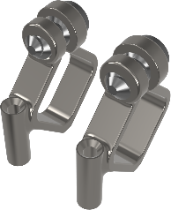
07.LFU.AR20Uso recomendado en razas toy.
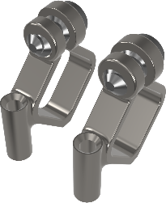
07.LFU.AR25Uso recomendado en razas medianas.
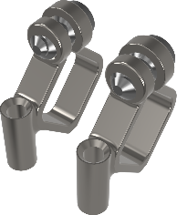
07.LFU.AR30Uso recomendado en razas grandes. También disponible Ø 3,5 mm (07.LFU.AR35), no indicado para uso artroscópico.
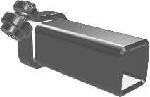
07.LFU.EXT30Añade distancia inicial entre pins. Se pueden apilar en serie.
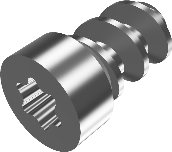
07.LFU.ARM2Tornillo de fijación con cabeza Torx 15.
Selecciona el tamaño del paciente y te indicamos el accesorio recomendado y la distancia mínima al hueso a la que colocar el distractor.
Las extensiones de 30 mm se apilan en serie para cubrir cualquier distancia entre pins.
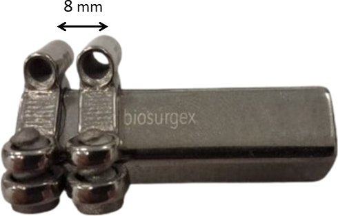
Configuración compacta para articulaciones pequeñas, con separación mínima de 8 mm.
Sin piezas sueltas difíciles de manejar en campo estéril: los accesorios se deslizan sobre la unidad y se fijan con un tornillo.
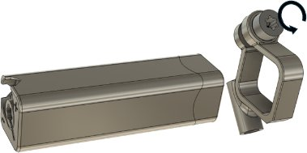
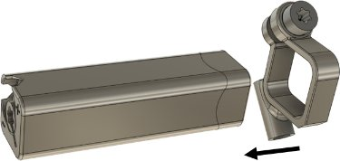
Afloja el tornillo del accesorio del pin, deslízalo hasta su posición y aprieta el tornillo para fijarlo.
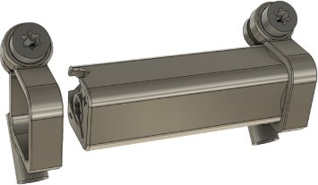
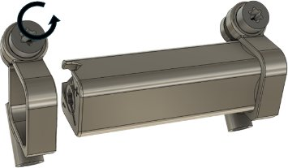
Repite con el segundo accesorio, ajusta la distancia entre ambos y aprieta el tornillo para dejarlo fijo.
Herramienta necesaria: Torx 15
Una distracción excesiva puede dañar ligamentos y tejidos blandos. Por eso Linear Force se coloca lejos del hueso: así el pin puede flexionar y te indica visualmente que la articulación ya está bajo alta tensión.
| Pin | Paciente | Distancia mínima |
|---|---|---|
| Ø 2,0 mm | Toy | 8 mm |
| Ø 2,5 mm | Mediana | 10 mm |
| Ø 3,0 mm | Grande | 12 mm |
Regla del manual de uso de Linear Force. Consulta siempre el manual completo antes de la cirugía.
Diseñado en colaboración con el Dr. Massimo Petazzoni, a partir de la práctica artroscópica diaria.Dr. Massimo Petazzoni · Clinica Veterinaria Milano Sud
Pide el kit en nuestra tienda online o escríbenos. Nuestro equipo técnico resuelve tus dudas sobre configuración, pins y casos clínicos.